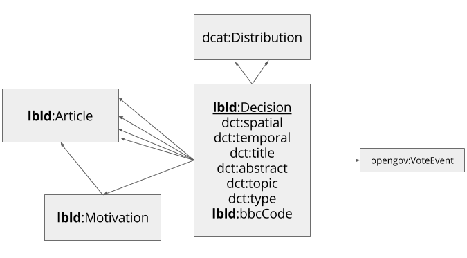

Linked Decisions as Linked Data (lblod) is a project for an interoperable ecosystem of local decisions. A project in 2016 carried out by iMinds created a proof of concept in co-creation with local authorities in Flanders, the regional government of Flanders, and different service providers. The result of the proof of concept contain, but are not limited to, this vocabulary, a proof of concept of a Linked Data authoring environment, a server harvesting local decisions using The DataTank, a search interface through the harvested data and a persistent URI creator.
This document is part of a proof of concept and will not be under active development after June 2016. It is up to future projects to extend the results of this proof of concept into a maintained vocabulary.
Furthermore, the URIs are not dereferencable at this point. At the time of writing, the Flemish URI strategy 2.0 was not yet voted, yet we took into account a draft from June 2016 when creating the URIs.
At a glance

The LBLD vocabulary: metadata for local decisions
An article
http://decisions.data.vlaanderen.be/ns#Article
An article is a formalization of a Decision: it contains the agreed upon rules.
A distribution
dcat:Distribution
A dcat:Distribution can be linked to a Decision in two ways: to provide a way to describe how a document containing the decision can be downloaded, using the predicate dcat:distribution.
Another way is to add an attachment to the decision using the predicate lbld:attachment.
Describing vote events
For describing vote events, we refer to the opengov specification.
A vote event has a link to the organization body.